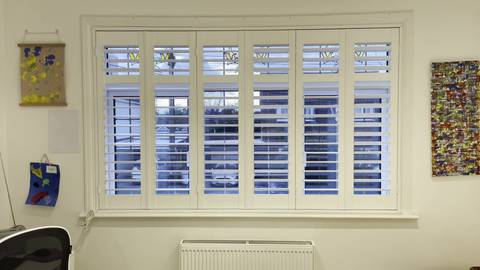

Film your window, get the right size
Made-to-measure has to be right first time. Film your window and your maker gets everything they need.
- Tape a sheet of A4 (or US Letter) flat on the wall beside the window.
- Film for about 10 seconds from across the room, with both sides of the window in shot. Say what you'd like.
- Send it here. Two or three photos work too.
Your clip
Nothing chosen yet.
Your clip isn't stored. The frames and sound go to Meta's model API to be measured, and only the result reaches your maker.

- You send it with one tap. Nothing goes anywhere until you do.
- Rob checks the size against the drawing of your window.
- You get a reply with exactly what to order, before anything is made.
Your window
0.0cm